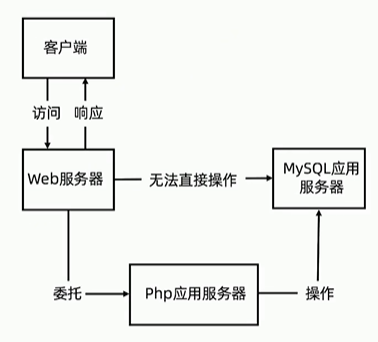

网站运作原理
Web App
WebApp(或Web应用程序)运行于网络和标准浏览器上，基于网页技术开发实现特定功能的应用。 前端:HTML,CSS,JavaScript
后端:Java，Python,PHP
数据库:MySQL,Oracle, MongoDB
容器: Windows(IIS), Linux(Nginx, Apache)
协议:TCP, DNS, HTTP, HTTPS

url: https://time.geekbang.org 浏览器输入网址到看到网页
过程：
- 客户输入URL，DNS解析URL得出IP地址，根据IP地址找出对应服务器
- 客户机通过TCP/IP协议建立到Web服务器的TCP链接
- 客户机向Web服务器发送HTTP请求报文，请求服务器里资源的资源文档
- Web服务器接收到客户机的HTTP请求报文，然后向客户机发出HTTP响应报文
| 请求种类 | 对应过程 |
|---|---|
| HTML | web服务器会将对应目录下相应的HTML文档打开，然后将文档的响应内容发送给客户机 |
| PHP | web服务器自身是不能处理PHP动态语言脚本文件的，然后就会寻找并委托PHP应用服务器，PHP应用服务器会将Web服务器请求的PHP文件解析成HTML静态代码，然后将HTML静态代码发送给Web服务器，最后Web服务器会将HTML静态代码发送客户机 |
| 访问数据库 | Web服务器会通过PHP应用服务器去访问数据库 |
客户机解析HTML静态文档 客户机与服务器断开链接
常见Web服务器
- Apache HTTP Server(简称Apache)是一个开放源代码的网页服务器软件，可以在大多数电脑操作系统中运行，由于其跨平台和安全性被广泛使用，是最流行的Web服务器软件之一。
- Nginx是一个网页服务器，它能反向代理HTTP, HTTPS, SMTP, POP3, IMAP的议链接，以及一个负载均衡器和一个HTTP缓存。Nginx是一款面向性能设计的HTTP服务器，相较于Apache、lighttpd具有占有内存少，稳定性高等优势。
- IIS 微软公司主推的服务器。
- Lighttpd是一个开源Web服务器软件,具有非常低的内存开销、CPU占用率低、效能好以及丰富的模块等特点。
- Tomcat是Apache软件基金会的Jakarta项目中的一个核心项目，由Apache、Sun和其他一些公司及个人共同开发而成。Tomcat技术先进、性能稳定，而且免费，因而深受Java爱好者的喜爱并得到了部分软件开发商的认可，成为目前比较流行的Web应用服务器。
框架
- Web应用框架是一种开发框架，用来支持动态网站、网络应用程序及网络服务的开发。其类型有基于请求的和基于组件的两种框架
- 有助于减轻网页开发时共通性活动的工作负荷，例如许多框架提供数据库访问接口、标准样板以及会话管理等，可提升代码的可再用性